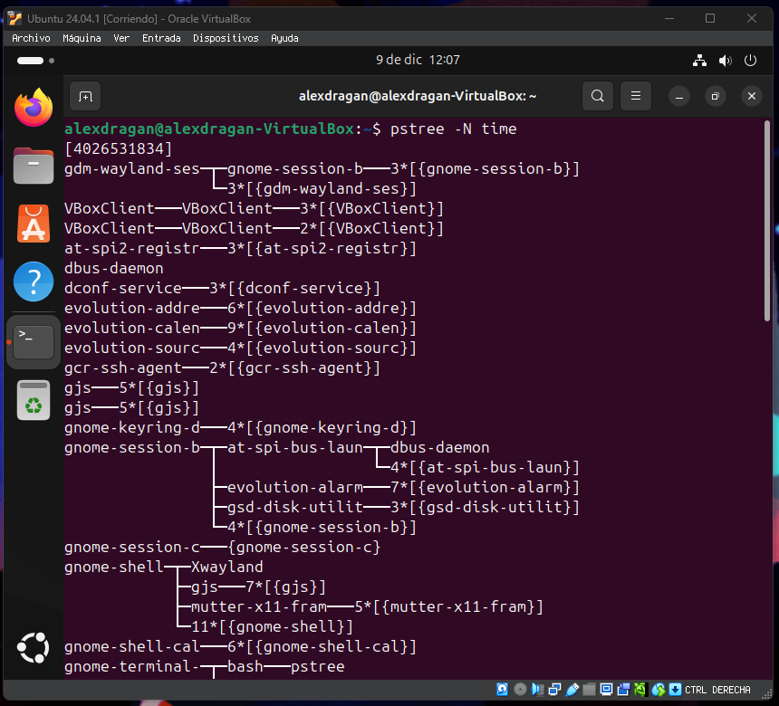

Gestion de procesos
Los procesos son aquellos programas que se estan ejecutando tanto en primer como segundo plano.
top
Te permite ver los procesos que se estan ejecutando desde un terminal.
Top

pstree
Te genera un arbol de los procesos.
pstree

Puedes usar estos parametros para ordenar o decidir lo que se ve.
-a o --arguments
muestra los argumentos de la línea de órdenes.

-A o --ascii
utiliza characteres de trazado de líneas ASCII.

-c o --compact-not
no compacta subárboles idénticos.

-C o --color=TIPO
colorea proceso por atributo por ejemplo edad.

-g o --show-pgids
muestra ids de grupos de procesos; implica -c.

-G o --vt100
utiliza caracteres de trazzdo de líneas VT100.

-h o --highlight-all
resalta el proceso actual y sus ascendientes

-H PID o --highlight-pid=PID
resalta este proceso y sus ascendientes

-l o --long
no trunca las líneas largas

-n o --numeric-sort
ordena la salida por PID

-N TYPE o --ns-sort=TYPE
ordena la salida por este tipo de espacio de nombres (cgroup o ipc o mnt o net o pid o time o user o uts)

-p o --show-pids
muestra PIDs; implica -c

-s o --show-parents
muestra los padres del proceso seleccionado

-S o --ns-changes
muestra las transiciones de espacios de nombres

-t o --thread-names
muestra los nombres completos de hilos

-T o --hide-threads
oculta hilos o muestra solo procesos

-u o --uid-changes
muestra transiciones de uid

-U o --unicode
utiliza caracteres de trazado de líneas UTF-8 (Unicode)

-V o --version
muestra información sobre la versión

-Z o --security-context
muestra los atributos de seguridad

PID
inicia en el PID asignado; predeterminado es 1 (init)

USUARIO
muestra solo árboles con raíz en los procesos de este usuario

PS AUX
Muestra los procesos actuales.
ps aux

Ctrl+C y Ctrl+Z
Ctrl+C Cancela el proceso que se esta ejecuatando.

Ctrl+Z Suspende el proceso que se esta ejecutando.

Jobs
Muestra los procesos que se estan ejecutando en segundo plano o estan detenidos en una sesion de shell.
jobs

fg %
Permite volver abrir el proceso que se ha suspendido.
fg %numero


Kill
Sirve para matar procesos
kill